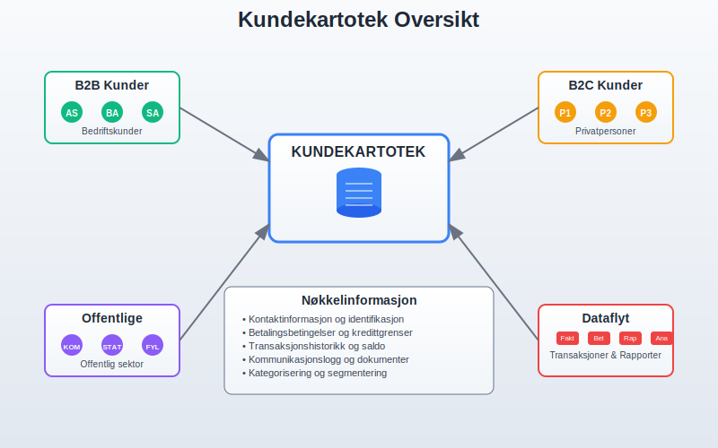
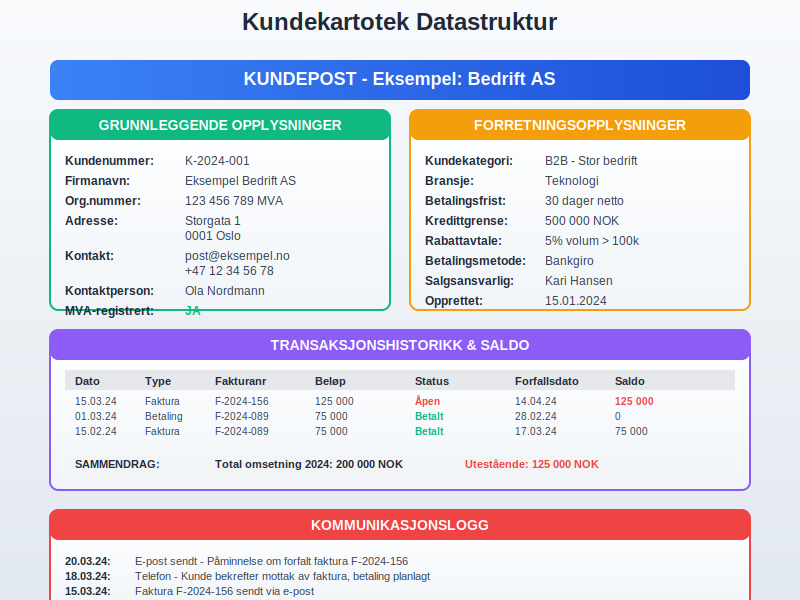
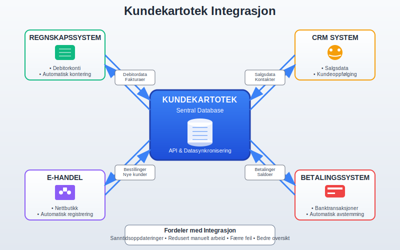
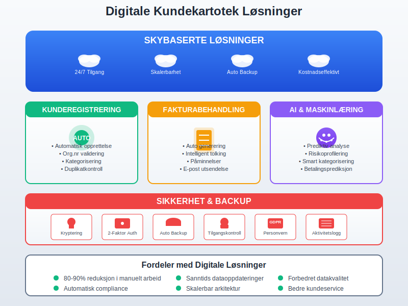

Et kundekartotek er en systematisk samling av informasjon om bedriftens kunder, organisert på en måte som gjør det enkelt å finne, oppdatere og bruke kundedata i daglige forretningsoperasjoner. I moderne regnskapsføring er et velorganisert kundekartotek essensielt for korrekt fakturering, effektiv debitorhåndtering og god internkontroll.
Seksjon 1: Grunnleggende om Kundekartotek
Et kundekartotek fungerer som ryggraden i kundeforholdet og er grunnlaget for all kommunikasjon og transaksjoner med kunder. Det omfatter både grunnleggende kontaktinformasjon og detaljerte forretningsdata som er nødvendig for å opprettholde profesjonelle kundeforhold og sikre korrekt regnskapsføring.

Hovedformål med Kundekartotek
- Systematisk kundeadministrasjon: Sentralisert lagring av all kunderelatert informasjon
- Effektiv fakturering: Rask tilgang til faktureringsdetaljer og betalingsbetingelser
- Debitoroppfølging: Oversikt over utestående fordringer og betalingshistorikk gjennom kundelister
- Kundeanalyse: Grunnlag for forretningsutvikling og kundesegmentering
- Juridisk dokumentasjon: Oppfyllelse av bokføringslovens krav til dokumentasjon
Digitale vs. Analoge Kundekartoteker
I dag bruker de fleste bedrifter digitale kundekartoteker integrert i regnskapssystemer eller CRM-løsninger. Dette gir betydelige fordeler sammenlignet med tradisjonelle papirbaserte systemer:
| Aspekt | Digitalt Kartotek | Analogt Kartotek |
|---|---|---|
| Tilgjengelighet | 24/7 tilgang fra flere lokasjoner | Begrenset til fysisk lokasjon |
| Søkefunksjon | Avansert søk og filtrering | Manuell gjennomgang |
| Sikkerhetskopi | Automatisk backup | Risiko for tap ved brann/skade |
| Integrasjon | Kobles til regnskap og fakturering | Manuell overføring av data |
| Oppdatering | Sanntidsoppdateringer | Tidkrevende manuell oppdatering |
| Kostnader | Lavere driftskostnader over tid | Høye kostnader for lagring og vedlikehold |
Seksjon 2: Obligatorisk Informasjon i Kundekartoteket
For å oppfylle lovkrav og sikre effektiv forretningsdrift må et kundekartotek inneholde spesifikk informasjon. Dette er særlig viktig for korrekt bokføring og for å kunne utstede gyldige fakturaer.

Grunnleggende Kundeopplysninger
Identifikasjon og Kontakt:
- Kundenavn: Fullstendig firmanavn eller personnavn
- Organisasjonsnummer/Fødselsnummer: Unik identifikator for juridiske personer og privatpersoner
- Adresse: Fullstendig postadresse inkludert postnummer og poststed
- Kontaktinformasjon: Telefonnummer, e-postadresse, kontaktperson
- MVA-status: Om kunden er registrert i Merverdiavgiftsregisteret
Forretningsrelaterte Opplysninger:
- Kundenummer: Unikt internt referansenummer
- Kundekategori: Segmentering basert på størrelse, bransje eller kundeforhold
- Betalingsbetingelser: Standard betalingsfrist og betalingsmetoder
- Kredittgrense: Maksimalt utestående beløp kunden kan ha
- Rabattavtaler: Eventuelle prisavtaler eller rabattordninger
Regnskapsmessige Krav
I henhold til bokføringsloven må bedrifter kunne dokumentere alle kundetransaksjoner. Kundekartoteket må derfor inneholde:
- Komplett transaksjonshistorikk: Alle salg, betalinger og justeringer
- Referanser til bilag: Kobling til fakturaer, kreditnotaer og betalingsbilag
- Aldersfordeling av fordringer: Oversikt over hvor lenge fakturaer har vært utestående
- Kommunikasjonslogg: Dokumentasjon av betalingsoppfordringer og kundekorrespondanse
Seksjon 3: Organisering og Struktur
En effektiv organisering av kundekartoteket er avgjørende for produktivitet og nøyaktighet i kundebehandlingen. Moderne systemer tilbyr flere måter å strukturere og kategorisere kundeinformasjon på.
Kundenummerering og Identifikasjon
Systematisk nummerering er grunnlaget for et velfungerende kundekartotek:
- Sekvensiell nummerering: Enkle løpenummer (001, 002, 003…)
- Kategorisert nummerering: Prefikser basert på kundetype (B001 for bedriftskunder, P001 for privatpersoner)
- Geografisk nummerering: Inkludering av regionkoder for geografisk segmentering
- Alfanumerisk system: Kombinasjon av bokstaver og tall for mer informasjon i nummeret
Kundekategorisering og Segmentering
Effektiv kategorisering gjør det enklere å administrere ulike kundegrupper:
Etter Kundetype:
- B2B-kunder: Bedriftskunder med spesielle krav til fakturering og dokumentasjon
- B2C-kunder: Privatpersoner med enklere transaksjonsmønstre
- Offentlige kunder: Spesielle krav til anskaffelsesprosedyrer
Etter Forretningsverdi:
- A-kunder: Høyverdi kunder som krever prioritert behandling
- B-kunder: Mellomstore kunder med standard service
- C-kunder: Småkunder med automatiserte prosesser
Etter Betalingsadferd:
- Kontantkunder: Betaler ved levering eller på forhånd
- Kredittkunder: Standard betalingsbetingelser
- Risikokunder: Krever spesiell oppfølging og eventuelt forskuddsbetaling
Seksjon 4: Integrasjon med Regnskapssystem
Et moderne kundekartotek må være sømløst integrert med bedriftens regnskapssystem for å sikre konsistens og effektivitet i alle kundetransaksjoner.

Automatisk Dataflyt
Fra Kundekartotek til Regnskap:
- Automatisk opprettelse av debitorkonti ved registrering av nye kunder
- Sanntidsoppdatering av kundebalanse ved fakturering og betaling
- Automatisk kontering basert på kundekategori og produkttype
Fra Regnskap til Kundekartotek:
- Oppdatering av kundebalanse og betalingshistorikk
- Automatisk registrering av betalinger og kreditnotaer
- Generering av aldersfordeling og kundeanalyser
API-integrasjoner og Datasynkronisering
Moderne bedrifter bruker ofte flere systemer som må dele kundeinformasjon:
- CRM-systemer: For salg og markedsføring
- E-handelsplattformer: For nettbutikker og online salg
- Lagerstyringssystemer: For produkttilgjengelighet og levering
- Betalingssystemer: For automatisk avstemming av banktransaksjoner
Seksjon 5: Vedlikehold og Datakvalitet
Et kundekartotek er bare så godt som dataene det inneholder. Systematisk vedlikehold og kvalitetssikring er derfor essensielt for å opprettholde nøyaktighet og relevans.
Rutiner for Datavedlikehold
Regelmessig Oppdatering:
- Månedlig gjennomgang: Kontroll av nye kunder og endringer i eksisterende kundedata
- Kvartalsvis validering: Verifisering av kontaktinformasjon og betalingsbetingelser
- Årlig storrengjøring: Arkivering av inaktive kunder og oppdatering av kundekategorier
Datakvalitetskontroll:
- Duplikatkontroll: Identifisering og sammenslåing av duplikate kundeposter
- Adressevalidering: Kontroll av postadresser mot offentlige registre
- Organisasjonsnummer-validering: Verifisering mot Brønnøysundregistrene
GDPR og Personvernhensyn
Kundekartoteker som inneholder personopplysninger må følge GDPR-regelverket:
Databehandlingsgrunnlag:
- Samtykke fra kunden for markedsføringsformål
- Kontraktsmessig nødvendighet for fakturering og levering
- Juridisk forpliktelse for regnskapsføring og arkivering
Kunderettigheter:
- Innsyn: Kunder har rett til å se hvilke opplysninger som er registrert
- Retting: Mulighet til å korrigere feilaktige opplysninger
- Sletting: Rett til å få slettet personopplysninger når de ikke lenger er nødvendige
- Dataportabilitet: Rett til å få utlevert egne data i strukturert format
Seksjon 6: Rapportering og Analyse
Et velorganisert kundekartotek gir grunnlag for verdifull forretningsinnsikt og støtter strategiske beslutninger gjennom systematisk rapportering og analyse.
Standard Kunderapporter
Debitorrapporter:
- Aldersfordeling: Oversikt over utestående fordringer fordelt på aldersgrupper
- Kundebalanse: Detaljert oversikt over hver kundes utestående beløp gjennom kundelister
- Betalingsanalyse: Gjennomsnittlig betalingstid og betalingsadferd per kunde
Salgsanalyser:
- Kundeomsetning: Rangering av kunder etter salgsvolum og lønnsomhet
- Produktanalyse per kunde: Hvilke produkter/tjenester hver kunde kjøper
- Sesongvariasjoner: Identifisering av mønstre i kundeadferd gjennom året
Nøkkeltall og KPI-er
Kundekartoteket gir grunnlag for viktige nøkkeltall som måler forretningsprestasjoner:
| Nøkkeltall | Beregning | Betydning |
|---|---|---|
| Gjennomsnittlig kundeomsetning | Total omsetning / Antall aktive kunder | Måler verdien per kunde |
| Kundelivstidsverdi (CLV) | Gjennomsnittlig årlig kjøp × Gjennomsnittlig kundeforhold i år | Langsiktig kundeverdi |
| Gjennomsnittlig betalingstid | Sum betalingsdager / Antall fakturaer | Måler betalingsadferd |
| Debitoromløpshastighet | Årlig omsetning / Gjennomsnittlig debitorbalanse | Effektivitet i innkreving |
Seksjon 7: Digitale Løsninger og Automatisering
Moderne teknologi har revolusjonert måten bedrifter administrerer kundekartoteker på. Automatisering og kunstig intelligens gjør det mulig å håndtere store kundemengder mer effektivt enn noen gang.

Cloud-baserte Kundekartoteker
Fordeler med skybaserte løsninger:
- Tilgjengelighet: Tilgang fra hvor som helst med internettforbindelse
- Skalerbarhet: Enkel utvidelse når bedriften vokser
- Automatiske oppdateringer: Alltid siste versjon av programvaren
- Integrerte sikkerhetskopier: Automatisk backup og gjenoppretting
- Kostnadseffektivitet: Lavere investeringskostnader og forutsigbare driftskostnader
Automatiserte Prosesser
Kunderegistrering:
- Automatisk opprettelse av kundeposter fra nettbutikk eller CRM
- Validering av organisasjonsnummer mot offentlige registre
- Automatisk kategorisering basert på forhåndsdefinerte regler
Fakturabehandling:
- Automatisk generering av fakturaer basert på kundedata
- Intelligent fakturatolk for behandling av innkommende fakturaer
- Automatisk utsendelse av betalingsoppfordringer
Kunstig Intelligens og Maskinlæring
Prediktiv Analyse:
- Forutsigelse av betalingsadferd basert på historiske data
- Identifisering av kunder med høy risiko for betalingsproblemer
- Optimalisering av kredittgrenser basert på kundeadferd
Automatisk Kategorisering:
- Intelligent segmentering av kunder basert på kjøpsmønstre
- Automatisk oppdatering av kundekategorier basert på endret adferd
- Personaliserte betalingsbetingelser basert på risikoprofil
Seksjon 8: Sikkerhet og Backup
Kundekartoteket inneholder kritisk forretningsinformasjon som må beskyttes mot tap, tyveri og uautorisert tilgang. En robust sikkerhetsplan er derfor essensielt.
Datasikkerhet og Tilgangskontroll
Brukeradministrasjon:
- Rollebasert tilgang: Ulike tilgangsnivåer basert på jobbfunksjon
- To-faktor autentisering: Ekstra sikkerhetslag for sensitive data
- Aktivitetslogging: Sporing av hvem som har tilgang til hvilke kundedata når
Teknisk Sikkerhet:
- Kryptering: Beskyttelse av data både under lagring og overføring
- Brannmur og antivirusprogramvare: Beskyttelse mot eksterne trusler
- Regelmessige sikkerhetsoppdateringer: Oppdatering av programvare og sikkerhetspatcher
Backup og Gjenoppretting
Backup-strategi:
- Daglige sikkerhetskopier: Automatisk backup av alle endringer
- Geografisk spredte kopier: Lagring på flere lokasjoner for katastrofeberedskap
- Testede gjenopprettingsprosedyrer: Regelmessig testing av backup-systemet
Forretningskontinuitet:
- Redundante systemer: Backup-servere som kan overta ved systemfeil
- Beredskapsplaner: Klare prosedyrer for håndtering av systemutfall
- Regelmessige øvelser: Testing av beredskapsplaner og gjenopprettingsprosedyrer
Seksjon 9: Juridiske Aspekter og Compliance
Administrasjon av kundekartoteker er underlagt flere juridiske krav som bedrifter må følge for å unngå sanksjoner og opprettholde tillit hos kunder og myndigheter.
Bokføringslovens Krav
I henhold til bokføringsloven må bedrifter:
- Oppbevare kundedata i minimum 5 år etter regnskapsårets slutt
- Sikre sporbarhet mellom kundetransaksjoner og regnskapsbilag
- Dokumentere alle endringer i kundeopplysninger med tidsstempel og brukeridentifikasjon
- Opprettholde intern kontroll som sikrer nøyaktighet og fullstendighet i kunderegistreringen
Arkivering og Oppbevaring
Digitale Arkiver:
- Kundedata må lagres i ikke-redigerbart format for arkivformål
- Metadata om opprettelse, endringer og tilgang må bevares
- Migrasjonsstrategi for å sikre tilgjengelighet når teknologi endres
Fysiske Dokumenter:
- Eventuelle papirdokumenter må oppbevares under kontrollerte forhold
- Brannsikring og fuktighetskontroll for å bevare dokumentkvalitet
- Tilgangskontroll til fysiske arkiver
Internasjonale Transaksjoner
For bedrifter med internasjonale kunder gjelder tilleggskrav:
- Valutarapportering: Dokumentasjon av transaksjoner i utenlandsk valuta
- Skattemessige forhold: Korrekt håndtering av MVA og skatt for utenlandske kunder
- Eksportkontroll: Overholdelse av eksportrestriksjoner og sanksjonsregimer
- Transfer pricing: Dokumentasjon av prissetting overfor nærstående selskaper
Seksjon 10: Implementering og Beste Praksis
Å etablere eller oppgradere et kundekartotek krever grundig planlegging og systematisk gjennomføring for å sikre suksess og minimere forstyrrelser i den daglige driften.
Planlegging og Prosjektledelse
Behovsanalyse:
- Kartlegging av nåværende kundeadministrasjon og identifisering av mangler
- Definering av krav til funksjonalitet og integrasjoner
- Vurdering av ressursbehov og tidsramme for implementering
Systemvalg:
- Standalone løsninger: Dedikerte kundekartoteksystemer
- Integrerte ERP-systemer: Omfattende ERP-løsninger med kundekartotek
- Cloud vs. on-premise: Vurdering av fordeler og ulemper ved ulike implementeringsmodeller
Datamigrering og Testing
Migreringsstrategi:
- Datarensing: Opprydding i eksisterende kundedata før overføring
- Testmiljø: Etablering av testsystem for validering av datamigrering
- Parallellkjøring: Gradvis overgang med parallell drift av gamle og nye systemer
Kvalitetssikring:
- Datavalidering: Kontroll av at alle kundedata er korrekt overført
- Funksjonalitetstesting: Verifisering av at alle funksjoner virker som forventet
- Brukeracceptansetesting: Testing med faktiske brukere i realistiske scenarioer
Opplæring og Implementering
Brukeropplæring:
- Rollebasert opplæring: Tilpasset opplæring basert på brukerens arbeidsoppgaver
- Praktiske øvelser: Hands-on trening med reelle kundedata
- Dokumentasjon: Utarbeidelse av brukermanualer og prosedyrebeskrivelser
Støtte og Vedlikehold:
- Helpdesk: Etablering av støttefunksjon for brukerspørsmål
- Kontinuerlig forbedring: Regelmessig evaluering og optimalisering av prosesser
- Systemoppdateringer: Planlegging av regelmessige oppdateringer og vedlikehold
Konklusjon
Et velorganisert kundekartotek er fundamentet for effektiv kundeadministrasjon og korrekt regnskapsføring. Det støtter alle aspekter av kundeforholdet, fra første kontakt til langsiktig kundepleie, og sikrer at bedriften kan oppfylle både juridiske krav og forretningsmessige mål.
Moderne digitale løsninger har gjort det enklere enn noen gang å etablere og vedlikeholde omfattende kundekartoteker som integreres sømløst med andre forretningssystemer. Ved å følge beste praksis for dataorganisering, sikkerhet og vedlikehold kan bedrifter bygge kundekartoteker som ikke bare oppfyller dagens behov, men også skalerer med fremtidig vekst.
Investeringen i et robust kundekartotek betaler seg tilbake gjennom forbedret kundeservice, mer effektiv fakturering, bedre kontantstrømstyring og verdifull forretningsinnsikt som støtter strategiske beslutninger og langsiktig lønnsomhet.